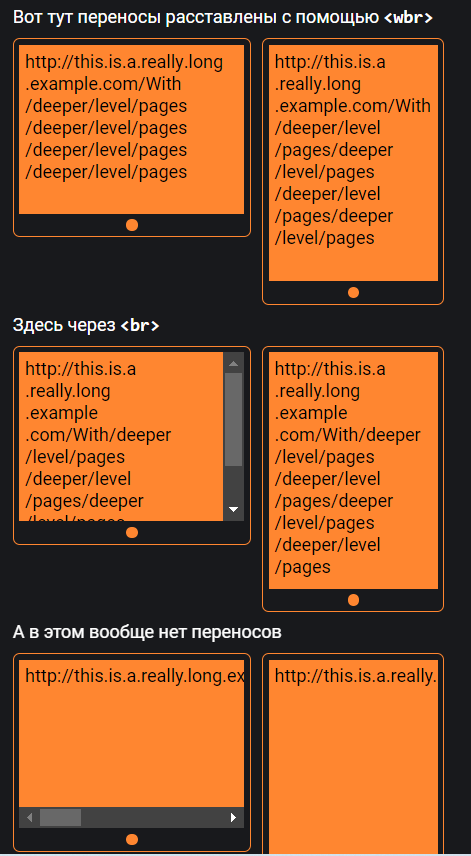

Тег <dl> входит в тройку элементов <dl>, <dt>, <dd>, предназначенных для создания списка определений. Каждый такой список начинается с контейнера <dl>, куда входит тег <dt>, создающий термин, и тег <dd>, задающий определение этого термина.
Представляет собой предварительно отформатированный текст, который должен быть представлен точно так, как написано в HTML-файле.
Сижу за решеткой в темнице сырой. Вскормленный в неволе орел молодой, Мой грустный товарищ, махая крылом, Кровавую пищу клюет под окном, Клюет, и бросает, и смотрит в окно, Как будто со мною задумал одно.
И с использованием тега:
Сижу за решеткой в темнице сырой.
Вскормленный в неволе орел молодой,
Мой грустный товарищ, махая крылом,
Кровавую пищу клюет под окном,
Клюет, и бросает, и смотрит в окно,
Как будто со мною задумал одно.
Таким образом, данный тег сохраняет все разрывы и пробелы без изменений и отображает текст фиксированной ширины.
Тег <code> предназначен для отображения одной или нескольких строк текста, который представляет собой программный код. Сюда относятся имена переменных, ключевые слова, тексты функции и т.д.
Атрибут type для тега ul — форма маркера списка.
Может принимать значения disc, square, circle.
Тег <tt> отображает текст моноширинным шрифтом, так называемый, телетайпный текст. Однако многие источники рекомендуют вместо него использовать стили.
На сайте находятся справочники и учебные курсы по различным веб-технологиям, а также руководства по вёрстке веб-страниц.
Тег <kbd> используется для обозначения текста, который набирается на клавиатуре или для названия клавиш. Браузеры обычно помечают текст в контейнере <kbd> моноширинным шрифтом.
Тег <var> используется для отображения переменных в математических выражениях и программном коде. Браузеры обычно помечают текст в контейнере <var> курсивным начертанием. В тег <var> нужно оборачивать отдельные переменные. Если нужно вывести относительно большой кусок кода, то лучше использовать тег <code>.
В выражении 2 − z, z может принимать только несколько значений: z = 2, z = 1, z = 0. Найдем значение этих выражений, если x = 5, y = 3, z = 2.
<sup> — 20 м2, x3+x2 = 1
<sub> — H2O, xab
Тег<blockquote> предназначен для выделения длинных цитат внутри документа. Текст, обозначенный этим тегом, традиционно отображается
как выровненный блок с отступами слева и справа (примерно по 40 пикселов), а также с отбивкой сверху и снизу.
Тег <q> лучше использовать для выделения короткой цитаты внутри предложения, комментария. Текст внутри тега автоматически обрамляется кавычками, чтобы выделить фразу.
Атрибут <cite> — адрес, который указывает на источник цитаты.
Работай — будто тебе не надо денег.
Люби — будто тебе никто никогда не причинял боль.
Танцуй — будто никто не смотрит.
Пой — будто никто не слышит.
Живи — будто на земле рай.
© Марк Твен
Ирландский драматург и романист Бернард Шоу говорил:
Теперь, когда мы уже научились летать по воздуху как птицы, плавать под водой как рыбы,
нам не хватает одного — научиться жить на земле как люди
.
Тег <ins> предназначен для выделения текста, который был добавлен в новую версию документа. Подобное форматирование позволяет отследить, какие изменения в тексте документа были сделаны. Браузеры обычно помечают текст в контейнере <ins> как подчеркнутый. Чаще всего в паре с ним исользуется тег <del>, который показывает текст, который был удален. Браузеры обычно помечают текст в контейнере <del> как перечеркнутый.
При болезни в случае высокой температуры необходимо принять горячую ванну обеспечить естесвенное охлаждение организма,
принимать горячую ванну не рекомендуется
Тег предназначен для указания контактной информации автора или владельца страницы. Это может быть физический адрес, электронная почта или номер телефона.Тег <address> имеет смысл использовать только тогда, когда нужно указать контактную информацию владельца страницы или автора статьи на странице.
ООО "ЛеСки Семейный Клуб"
Юридический адрес: г. Минск, ул. Кульман 1/3
Телефон: +375-29-267-53-78 ☎
Электоронная почта k.victoria@leski.by 🖄
Отображает текст без переносов на другую строку, т.е. в одну строку. Зачастую это неудобно, потому что пользователям придется прокручивать текст по горизонтали, чтобы увидеть его полностью, чего обычно делать никто не любит. Но если неоюходимо, чтобы текст не разрывался на другую строку, то можно использовать этот тег.
Обрати внимание!
Этот тег не входит в спецификацию HTML и его наличие приведет к невалидному коду, можно использовать аналог в CSS.
Тег <wbr> указывает браузеру место, где допускается делать перенос строки в тексте, если текст не влезает в родительский элемент.
Это полезно для адаптивной вёрстки, если в тексте есть длинные слова или, например, ссылки.
Например, если есть очень длинная ссылка, то браузер может сделать перенос в неподходящем месте (где стоит какой-нибудь рандомный дефис), либо вообще его не сделать.
Если разметить тегом <wbr>, то разметка для маленького экрана будет выглядеть плохо на большом, но переносы все равно нужно как-то
расставить. Вот такую дилемму и решает тег <wbr>
Разницу можно увидеть в следующем примере:
